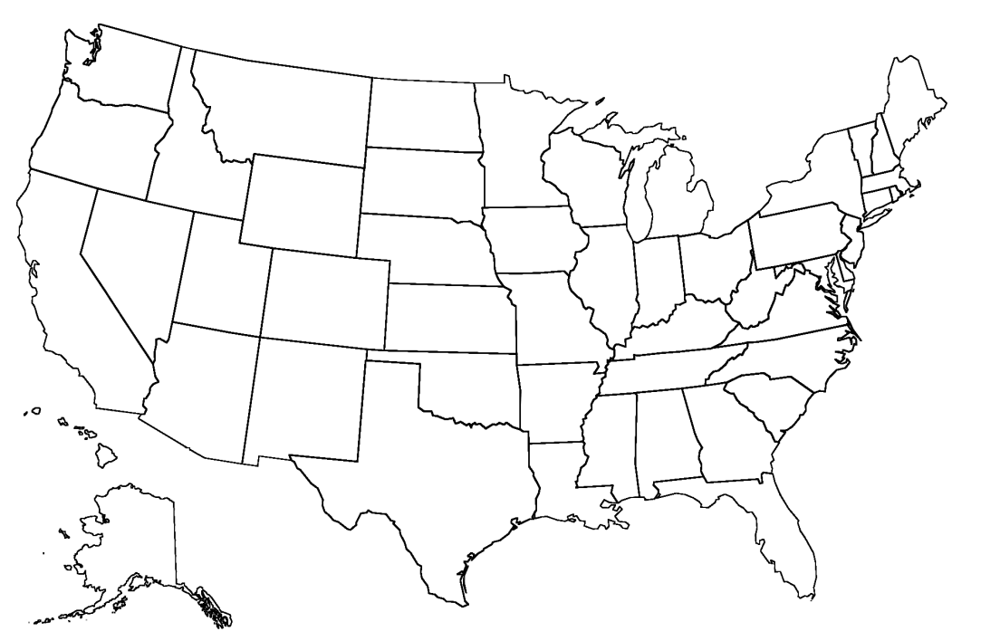
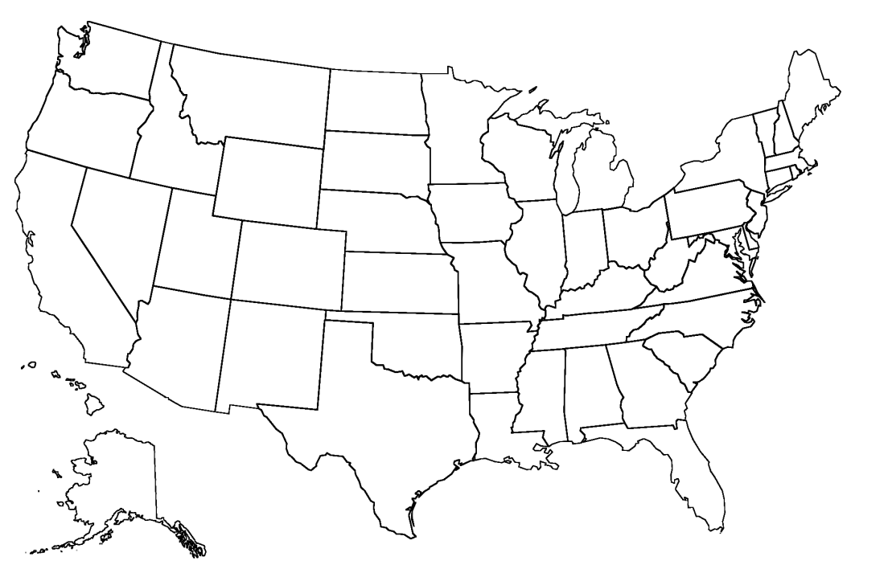
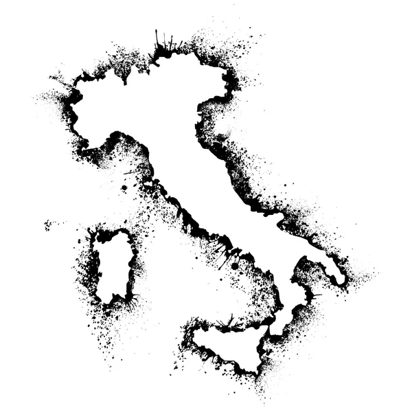
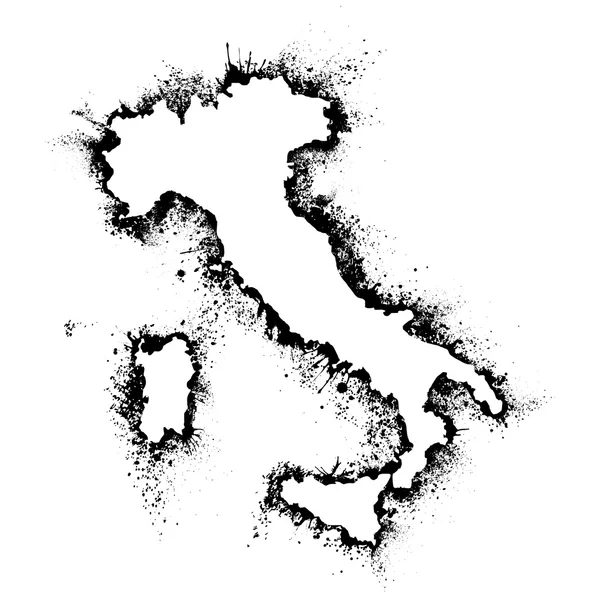

 

Jon W Rudicil
jonrudicil@yahoo.com
I am an American most recently living in Seattle where I worked in State and Local Government as well as the NonProfit world.
While I lived in Seattle I took full advantage of all the outdoor activites available in the surrounding area and spent most of my off work time outdoors.
Just over a year ago I got married and moved to Palermo Sicily where I now live and am starting training for a new career.
Hobbies
- Trekking
- Auto & Moto Mechanics
- Traveling
- American BarBque (Smoker not Grilling)
I have a wide range of work experience from non-profit to business and government.
I have attached a link to my Github, LinkIn below as well as at the bottom of the page.
-
Github
llinkedin
My Top Skills
- Operational Management
- Public Messaging Development
- Coalition Building
- Stakeholder Management
Skills to Accuire
- Web Design
- Data Management
- Mobile Application Design